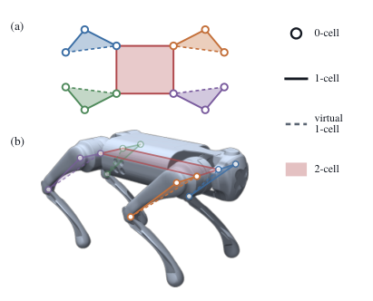
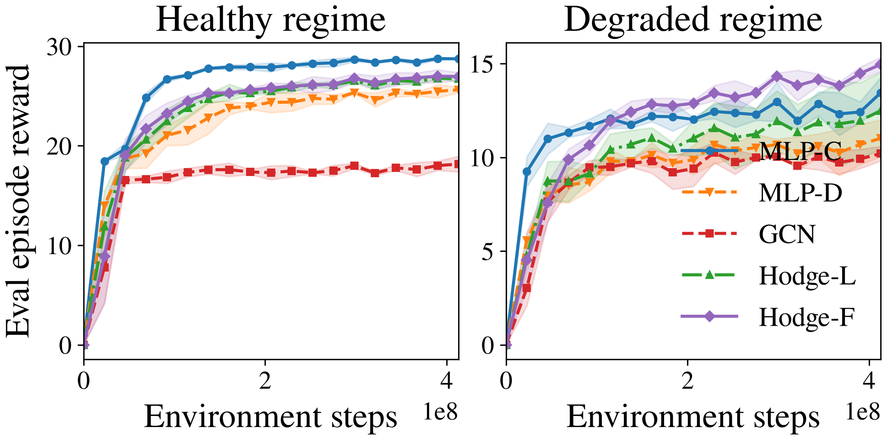

Higher-Order Morphology Priors for Quadruped Reinforcement Learning Under Actuator Degradation
Abstract
Actuator degradation turns quadruped locomotion into a coordination problem requiring joints to compensate for lost actuation. Prior work suggests that morphology-aware graph policies improve learning and generalization under body perturbations. We ask whether these benefits can be strengthened by explicitly modeling higher-order mechanical structure. We represent the Unitree Go1 as a cell complex with limb- and body-level rank-2 cells and apply Hodge-based message passing. Under degradation training, the node-edge-face Hodge actor achieves the highest return on unseen actuator degradations, with higher survival and lower velocity-tracking error. These results support higher-order morphology as a useful inductive bias for whole-body compensation under actuator degradation.
Higher-Order Go1 Morphology & Multi-Rank Hodge Propagation

Fig. 1: Go1 higher-order morphology. Twelve actuated joints form 0-cells; sixteen 1-cells give eight serial couplings, four around the hip ring, and four dashed virtual closures bounding each leg face. Five shaded 2-cells encode four limb structures plus the coplanar hip body cell.
Most morphology-aware policies represent a quadruped as a classical graph of joints (0-cells) and links (1-cells). At a higher level, however, joints form persistent mechanical units: each three-joint leg acts jointly to place a foot, and the four hips form a rigid coplanar ring. We promote these closed cycles to explicit rank-2 cells (faces), yielding a cell complex with 12 nodes, 16 edges, and 5 faces coupled by oriented incidence matrices B1 ∈ ℝ12×16 and B2 ∈ ℝ16×5.
At each layer ℓ and rank k ∈ {0, 1, 2}, the actor combines same-rank Hodge Laplacian propagation with cross-rank incidence messages:
L_k = B_kᵀ B_k + B_{k+1} B_{k+1}ᵀ, S_k = L_k H_k
C_k = B_kᵀ H_{k-1} + B_{k+1} H_{k+1}
M_k^(ℓ) = α_k^(ℓ) S_k^(ℓ) + (1 - α_k^(ℓ)) C_k^(ℓ)All five compared actors (MLP-C, MLP-D, GCN, Hodge-L over ranks 0–1, and Hodge-F over ranks 0–2) are capacity-matched within 0.5% of 171,296 parameters and share an identical privileged PPO critic and 400M-step training budget across seeds {11, 12, 13}.
Experimental Results
We evaluate policies across two training and evaluation regimes on the MuJoCo Playground Go1JoystickFlatTerrain task: the Healthy regime (H) with nominal actuation (ρi = 1) and the Degraded regime (D) where two actuators are simultaneously degraded across 44 training and 22 held-out joint pairs.

Fig. 3: In-regime learning curves. Evaluation episode returns under the healthy (left) and degraded (right) regimes. Under degradation training, Hodge-F achieves the strongest performance.
Table I: In-Regime Evaluation Results (H → H and D → D)
| Actor | H → H (Healthy Training & Eval) | D → D (Degraded Training & Held-Out Eval) | ||||
|---|---|---|---|---|---|---|
| Return ↑ | Survival ↑ | Vel. RMSE ↓ | Return ↑ | Survival ↑ | Vel. RMSE ↓ | |
| MLP-C | 33.88 ± 0.03 | 1.00 ± 0.00 | 0.052 ± 0.001 | 19.98 ± 0.50 | 0.88 ± 0.02 | 0.324 ± 0.003 |
| MLP-D | 31.17 ± 0.15 | 1.00 ± 0.00 | 0.060 ± 0.001 | 18.15 ± 1.09 | 0.83 ± 0.06 | 0.320 ± 0.008 |
| GCN | 24.52 ± 0.07 | 1.00 ± 0.00 | 0.302 ± 0.001 | 15.35 ± 0.21 | 0.73 ± 0.01 | 0.339 ± 0.001 |
| Hodge-L | 32.30 ± 0.27 | 1.00 ± 0.00 | 0.057 ± 0.002 | 18.61 ± 1.79 | 0.83 ± 0.09 | 0.325 ± 0.008 |
| Hodge-F (Ours) | 32.58 ± 0.53 | 1.00 ± 0.00 | 0.056 ± 0.002 | 22.40 ± 0.63 | 0.94 ± 0.01 | 0.252 ± 0.036 |
Table II: Cross-Regime Evaluation Results (H → D and D → H)
| Actor | H → D (Zero-Shot Degradation) | D → H (Degradation-Trained on Nominal) | ||||
|---|---|---|---|---|---|---|
| Return ↑ | Survival ↑ | Vel. RMSE ↓ | Return ↑ | Survival ↑ | Vel. RMSE ↓ | |
| MLP-C | 16.89 ± 0.10 | 0.69 ± 0.05 | 0.205 ± 0.005 | 24.85 ± 0.21 | 1.00 ± 0.00 | 0.306 ± 0.001 |
| MLP-D | 13.87 ± 0.41 | 0.57 ± 0.03 | 0.208 ± 0.003 | 24.74 ± 0.32 | 1.00 ± 0.00 | 0.307 ± 0.004 |
| GCN | 12.99 ± 0.28 | 0.70 ± 0.02 | 0.342 ± 0.009 | 23.83 ± 0.18 | 1.00 ± 0.00 | 0.307 ± 0.001 |
| Hodge-L | 15.32 ± 0.92 | 0.63 ± 0.03 | 0.195 ± 0.017 | 24.87 ± 0.31 | 1.00 ± 0.00 | 0.311 ± 0.000 |
| Hodge-F (Ours) | 15.59 ± 1.16 | 0.60 ± 0.03 | 0.207 ± 0.001 | 27.17 ± 1.73 | 1.00 ± 0.00 | 0.220 ± 0.060 |

Severity Sweep (H → D vs. D → D): Across held-out compound actuator degradations, Hodge-F maintains higher return, higher survival rate, and lower velocity tracking error than all baselines.
BibTeX
@inproceedings{you2026higherorder,
title={Higher-Order Morphology Priors for Quadruped Reinforcement Learning Under Actuator Degradation},
author={You, Derek and Shamsi, Zafir and Wang, Keqin and Allen-Blanchette, Christine},
booktitle={IROS Workshop on Hybrid Architectures for Embodied Autonomy: Bridging Learning, Planning, and Control (BLPC)},
year={2026},
note={Spotlight Paper, arXiv:2610.10934},
url={https://arxiv.org/abs/2610.10934}
}